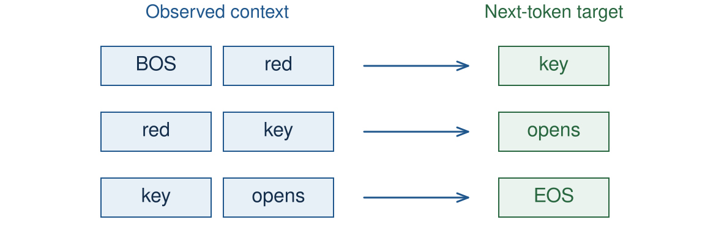
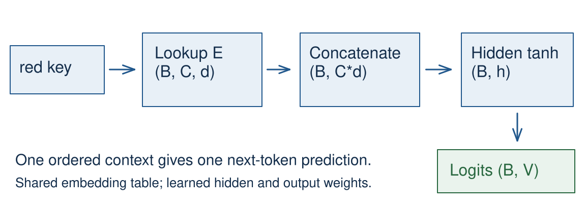
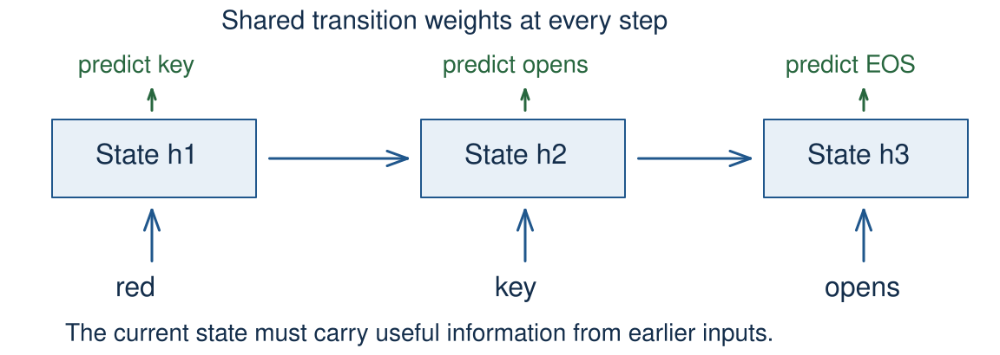
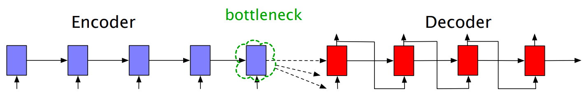
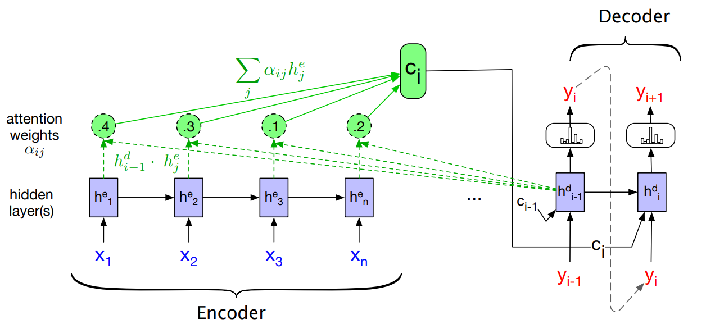

CS40008.01 · NLP and LLMs · Lecture 04
Neural LMs and Recurrent Attention · 复旦大学数据科学学院 · Baojian Zhou · 2026-09-30
这节课回答一个问题：模型如何保留并选择有用的上下文？ 从「只看最后一个词」的 bigram，到定长窗口前馈网络，再到循环状态、LSTM 门控， 最后到 RNN 编码器–解码器里的注意力对齐。这是 Lecture 05 自注意力与 Transformer 的直接前身。
这份笔记整理自课程公开课件（baojian.github.io/llm-26-fall/slides/lecture-04/）。每节标题后的标签含义：
Note: 里的讲者备注，相当于老师课堂上的口头讲解与提醒。老师特别提醒的易错点，我用橙色框单独标出。所有示例数值我都重新验算过一遍。
第一节课 45 分钟的目标：先把「上下文」这个概念从 1 个词扩展到 $C$ 个词， 看清一个完整的前向计算是怎么走的，然后亲手把它训练起来。 这一步不涉及循环，也不涉及注意力——它是后面两节课的基线。
上一讲的 TinyLM 是一个向量瓶颈的 bigram：
$$h_t=E[w_t],\qquad z_t=W_o h_t+b_o,\qquad p(w_{t+1}\mid w_t)=\operatorname{softmax}(z_t)$$这里 $E\in\mathbb{R}^{|V|\times d}$ 是嵌入表，$W_o\in\mathbb{R}^{|V|\times d}$ 是输出投影。 查表和投影都是可训练参数。
只有当前 token 决定下一个预测。给嵌入表加可训练参数，并不会让这个计算看到更早的词。
记号上：$t$ 是当前输入 token 的位置，$z_t$ 用来预测 $t+1$。
| 观察到的前缀 | 玩具语料里的下一个词 |
|---|---|
| BOS red key | opens |
| BOS blue key | closes |
两个前缀的最后一个词都是 key。bigram 只看当前 token，所以它在 key 之后
必须给出同一个分布。要区分这两个前缀，至少需要两个 token 的上下文。
把注意力限制在这两个目标上。因为两种前缀出现得一样频繁，最优的 bigram 概率只能是
\[p(\text{opens}\mid \text{key})=p(\text{closes}\mid \text{key})=\tfrac12\]于是平均损失是
\[-\tfrac12\log\tfrac12-\tfrac12\log\tfrac12=\log 2\approx 0.6931\ \text{nats}\]这就是这个 bigram 在 key 处的损失下界——无论怎么训练都降不下去。而换成 $C=2$ 的窗口，
两个前缀可以给出不同的分布，这个 $0.6931$ 就能被压掉。
这是一个刻意构造的调试语料，不是「自然语言的下一个词都是确定的」这种论断。 老师强调：不要在课堂上宣称自然语言的续写具有确定性。笔记本在这两个完整句子上训练， 一共六个「长度 2 的上下文/目标」配对。
| ID | 0 | 1 | 2 | 3 | 4 | 5 | 6 |
|---|---|---|---|---|---|---|---|
| Token | BOS | red | blue | key | opens | closes | EOS |

以句子 BOS red key opens EOS 为例，三个窗口与目标分别是：
| # | 上下文（$C=2$） | 目标 |
|---|---|---|
| 1 | BOS red | key |
| 2 | red key | opens |
| 3 | key opens | EOS |
滑动步长取 1，意味着相邻的两个训练样本共享 $C-1$ 个 token。这样做的代价是样本冗余， 收益是每一个位置都能作为「最后一个上下文位置」出现一次—— 而最后一个位置正是我们要预测下一个词的地方。
如果步长取 $C$，那每个窗口只有末尾那一位参与预测，前面的位置就白白浪费了。 这也解释了为什么 $C=2$ 时一共只有 3 个窗口：句长 5，可用的「末位」位置是 $1,2,3$。
把语料切分成 train/dev 文档，必须发生在抽取重叠窗口之前。 否则同一个窗口可能一半在训练集、一半在验证集。这个演示只用了一个极小的训练批次，没有留出评估集。

数据流一共四步：
机制沿用 2025 春季 Lecture 04 的 NPLM，第 17–20 页。新的 CPU 例子用 nn.Module
和一个本地词表，不依赖 Transformers 封装，也不需要下载任何东西。
这是 Bengio 风格网络的简化版：省略了可选的「输入直连输出」连接
（原论文 §2，Bengio et al. 2003）。
非线性让网络能够学习特征之间的交互。而连续的仿射层本身做不到这件事。
设两层仿射变换为 $y=W_2(W_1x+b_1)+b_2$。把括号展开：
\[y=W_2W_1x+(W_2b_1+b_2)\]记 $\widetilde W=W_2W_1$、$\tilde b=W_2b_1+b_2$，则 $y=\widetilde Wx+\tilde b$—— 这仍然是一个仿射映射，和只用一层在表达能力上没有任何区别。参数量多了，但函数族没变大。
所以中间那层 $\tanh$（或 ReLU、GELU）不是装饰：它打断了线性叠加，让网络能表示 「$w_{t-1}$ 是 red 且 $w_t$ 是 key」这类合取条件。
nn.Linear 的权重形状是 (out_features, in_features)。| 量 | 形状 | 说明 |
|---|---|---|
| 上下文 ID | $(B,C)$ | $B$ 是窗口个数，不一定是文档数 |
| 嵌入查表 | $(B,C,d)$ | 每个窗口 $C$ 行 |
| 拼接后的上下文 | $(B,Cd)$ | 展平，保持窗口内位置顺序 |
| 隐表示 | $(B,h)$ | 一个窗口一个向量 |
| 词表 logits | $(B,\lvert V\rvert)$ | 每行一个目标 |
注意 $(B,C,d)\to(B,Cd)$ 这一步：$C$ 轴被展平进特征轴，而不是被聚合掉。 这就是「位置信息靠拼接顺序携带」的含义——第 1 个 token 的 $d$ 个分量永远落在前 $d$ 列。
再往后，$(B,Cd)\to(B,h)$ 才是真正的聚合：$C$ 个位置的信息被压进一个 $h$ 维向量。 这个「压成一个向量」正是后文注意力要解决的问题——定长窗口的网络必须把所有位置挤进一个表示里。
常见错误：在输出里保留了序列长度轴，尽管这个模型对每个完整窗口只产生一个下一个 token 预测。 形状推理的做法沿用 CS336 Lecture 2 的 tensor/einops 例子。
self.embedding = nn.Embedding(V, d)
self.hidden = nn.Linear(C * d, h)
self.output = nn.Linear(h, V)
def forward(self, ids):
x = self.embedding(ids) # B, C, d
x = x.flatten(start_dim=1) # B, C*d
h = torch.tanh(self.hidden(x))
return self.output(h) # B, V这是笔记本里 ContextLM 的摘录；初始化写在 __init__ 里。
宽度 $V,d,h,C$ 与上一节的记号一一对应。nn.Linear 默认带偏置。
cross_entropy 之前先做 softmax。logits = model(contexts) # B, V
loss = F.cross_entropy(logits, y) # y: B均匀 logits 的平均损失是 $\log |V|$。对这个词表就是 $\log 7\approx1.9459$ nats。
softmax 给出 $p_j=e^{z_j}/\sum_k e^{z_k}$，而目标 $y$ 是 one-hot。于是
\[\ell(z,y)=-\log p_y=-\log\frac{e^{z_y}}{\sum_j e^{z_j}} =-z_y+\log\sum_j e^{z_j}\]最后这个形式就是「目标 logit 减去 log-sum-exp」。写成这个形状的好处是： 它不再需要显式构造 softmax 概率，数值上也更稳（下一节）。
如果 logits 全部相等（比如随机初始化后接近均匀），则 $\ell=\log|V|$，正好是「什么都不知道」的基线。 对本例 $|V|=7$：$\log 7=1.9459101\ldots$。
默认的 reduction 是 $B$ 个样本取平均。这个 7 路均匀基线包含 BOS 那一行。 随机初始化的模型不一定恰好从均匀基线开始。目标 ID 用的是和输出行同一套词表映射。
给定 logits $(1000,\,1001,\,999)$，目标下标为 $1$：
log_z = torch.logsumexp(logits, dim=-1)
loss = log_z - logits[..., 1]直接做指数运算会溢出。稳定版本的损失是 0.4076 nats。
取最大 logit $m=1001$，利用 $\log\sum e^{z_j}=m+\log\sum e^{z_j-m}$：
\[\log\sum_j e^{z_j}=1001+\log\big(e^{1000-1001}+e^{0}+e^{999-1001}\big) =1001+\log\big(e^{-1}+1+e^{-2}\big)\]代入 $e^{-1}=0.3678794$、$e^{-2}=0.1353353$，括号内为 $1.5032147$，取对数得 $0.4076060$。所以
\[\text{loss}=\big(1001+0.4076060\big)-1001=0.4076060\ \text{nats}\]如果不做平移而直接算 $e^{1000}$，float32 的上限约为 $3.4\times10^{38}$ 而 $e^{1000}\approx1.97\times10^{434}$，
直接变成 inf，$\log(\infty)-\infty$ 就成了 nan。
减去最大 logit 不改变 softmax 概率，也不改变最终的对数归一化损失—— 因为分子分母同乘一个常数因子。对一般的 batch，要按行取出各自的 目标 logit，而不是永远取第 1 列。
训练循环里请直接把原始 logits 交给 cross_entropy，让它内部做稳定化。
optimizer.zero_grad(set_to_none=True)
logits = model(contexts)
loss = F.cross_entropy(logits, targets)
loss.backward()
optimizer.step()
history.append(loss.item())梯度会累积，直到被清零。优化器负责更新参数。
| 行 | 作用 |
|---|---|
zero_grad | 清空上一轮留下的梯度（PyTorch 默认累加） |
model(contexts) | 前向，建立计算图 |
cross_entropy | 标量损失，是计算图的叶子 |
backward | 反向，把梯度写进各参数的 .grad |
step | 按优化器规则修改参数数值 |
一句话：backward 产生梯度，step 改变权重，两者缺一不可。
整个 200 次更新中，模型结构和数据都不变。这里的 history 记录的是每次更新之前的损失；
笔记本里画的曲线则显式地在训练前和每次更新后各测一次，所以它的横轴表示「已完成的更新次数」是准确的。
参考 CPU 环境上的最终损失约 0.006996。不同平台会有微小的浮点差异。 训练损失低本身，不能作为「能处理新文档」的任何证据。
| 上下文 | 目标 | 模型预测 |
|---|---|---|
| red key | opens | opens |
| blue key | closes | closes |
模型现在用上了更早的那个 token。六个训练窗口全部预测正确。
bigram 在 key 处的输入表示是 $E[\text{key}]$——两个前缀完全一样，
所以它只能输出一个分布，两个目标里必然错一个，损失下界 $\log 2$（见 §1.2）。
而 $C=2$ 的模型看到的输入是 $[E[\text{red}];E[\text{key}]]$ 和 $[E[\text{blue}];E[\text{key}]]$， 这是两个不同的向量。既然输入不同，隐层就可以把它们分到不同的区域， 从而在输出层给出「opens 高 / closes 低」和「closes 高 / opens 低」两种分布。
注意这是训练集上的预测，不是留出集准确率。
| 观察到的现象 | 先查什么 |
|---|---|
| 反向传播直接报错 | 损失被 detach 了，或梯度被禁用 |
| 损失一直不降 | 更新有没有执行、学习率、目标对齐 |
| 损失变成非有限值 | logits、梯度、学习率 |
| 同样的输入、冲突的目标 | 模型实际能看到的上下文 |
这些只是排查的第一步，不是唯一的诊断结论。具体做法：打印几个上下文/目标对，
检查梯度范数，验证 step 之后参数确实变了。
梯度非零不等于实现正确。另外，冲突的目标即使优化到完美也会有不可约的条件熵。 当前的 $C=2$ 批次是刻意避开这种冲突的。
| 问题 | 该看什么证据 |
|---|---|
| 这个实现能学吗？ | 拟合一个小而一致的训练批次 |
| 它能预测新文本吗？ | 在单独留出的文档上测损失 |
在构造重叠窗口之前切分文档。保持分词器、目标对齐和损失单位一致。
model.eval() 改变的是 dropout、BatchNorm 这类模块的行为；
torch.no_grad() 控制的是要不要记录梯度。两者都不改变评估用的是哪批数据——
留出集必须是你自己切出来的。
留出集上的困惑度 $\exp(\text{平均 NLL})$ 只有在分词方式和计分约定相同时才可比较 （Lecture 02 已讨论）。
第二节课 45 分钟：从「固定看 $C$ 个词」过渡到「用状态记住整个前缀」。 核心动作是亲手追踪一个状态和一个梯度，然后看懂一个 LSTM 单元的更新。
| 模型 | 一次预测能拿到的信息 |
|---|---|
| Bigram | 当前 token |
| 定长窗口神经 LM | 固定数量的近期 token 向量 |
| 循环 LM | 通过整个前缀更新出来的状态 |
循环状态的宽度不随前缀增长——这是它的关键性质，也是它的根本约束。
沿用 red key / blue key 的例子：循环状态有能力把前面的颜色带过来。 但「信息可用」和「模型成功学到了这段记忆」是两个不同的断言。 这张表比较的是上下文的通路，不是普遍的质量排序。

把图从左到右读，你会发现它是一条链，而不是一棵树或一张网： 第 $t$ 步只能通过 $h_{t-1}$ 间接看到 $t-1$ 步之前的一切。
于是「距离」变成了一个很具体的量：从位置 1 到位置 50，信息要穿过 49 次状态更新。 下一节的梯度问题，根源就在这个「49 次」。另外，独立的文档边界处必须重置状态， 否则上一篇文章的语义会漏进下一篇。
| 量 | 单条序列的形状 |
|---|---|
| 输入 $x_t$ | $d$ |
| 状态 $h_t$ | $m$ |
| 输入矩阵 / 循环矩阵 | $m\times d$ / $m\times m$ |
参数在时间上共享。
参数量是 $md+m^2+m$，与序列长度无关。处理 5 个词和处理 5000 个词，参数一样多。
另外要分清两件事：状态 $h_t$ 是激活值，不是每一步新增的可训练参数。 每一步都在用同一套 $W_x,W_h,b$，只是喂进去的 $x_t$ 不同。
这个式子还有一种等价写法：把 $x_t$ 和 $h_{t-1}$ 拼起来，用一个 $m\times(m+d)$ 的大矩阵乘一次。 实现上更省一次矩阵乘法的调度开销，数学上完全一样。
链式法则把局部导数沿着状态路径连乘起来。
$$0.9^{50}\approx0.0052,\qquad 1.1^{50}\approx117.4$$真实的循环梯度涉及雅可比矩阵的乘积。信号收缩和放大，都会让长距离依赖难以学习。
它们是对「连乘」这个机制的标量示意，不是实测的 RNN 梯度：
| 每步因子 | 50 步之后 | 含义 |
|---|---|---|
| $0.9$ | $0.0052$ | 梯度衰减到约千分之五 → 梯度消失，远端信息学不到 |
| $1.1$ | $117.4$ | 梯度放大一百多倍 → 梯度爆炸，训练发散 |
把标量换成矩阵，就是
\[\frac{\partial h_t}{\partial h_{t-1}}=W_h^{\mathsf T}\operatorname{diag}\!\big(1-h_t^2\big)\]其中 $\operatorname{diag}(1-h_t^2)$ 来自 $\tanh'=1-\tanh^2$。于是 $k$ 步之外的依赖要乘上
\[\prod_{i=1}^{k}W_h^{\mathsf T}\operatorname{diag}\!\big(1-h_{t-i+1}^2\big)\]这个乘积的谱半径决定衰减还是放大：小于 1 就消失，大于 1 就爆炸。 激活函数的导数也参与其中——$\tanh'$ 的取值永远 $\le1$，这本身就偏向收缩。
不要说「每个循环梯度都会消失或爆炸」。消失/爆炸是倾向，不是必然； 长短依赖能否学出来，取决于具体初始化、数据与优化过程。 来源：Pascanu, Mikolov, Bengio (2013), §2。
对 $h_t=ah_{t-1}+x_t$ 且 $h_0=0$：
$$h_3=a^2x_1+ax_2+x_3$$ $$\frac{\partial h_3}{\partial a}=2ax_1+x_2$$用 E03 的输入和 $a=0.5$，这个导数是 1。
逐层代入，$h_0=0$：
\[h_1=x_1,\quad h_2=ax_1+x_2,\quad h_3=a(ax_1+x_2)+x_3=a^2x_1+ax_2+x_3\]对 $a$ 求偏导（$x$ 视为常数）：
\[\frac{\partial h_3}{\partial a}=2ax_1+x_2\]代入 E03 的 $x=(x_1,x_2,x_3)=(1,0,1)$ 与 $a=0.5$：$2\times0.5\times1+0=1$。✓
顺便复核状态：$h_3=0.25\times1+0.5\times0+1=1.25$，与 E03 的答案一致。
| 求导对象 | 结果 | 含义 |
|---|---|---|
| $\partial h_3/\partial x_1$ | $a^2=0.25$ | 第一个输入对最终状态的影响，被衰减了两次 |
| $\partial h_3/\partial a$ | $2ax_1+x_2=1$ | 共享权重的影响，来自两个不同时间步的累加 |
为什么后者更大？因为参数 $a$ 在第 1 步和第 2 步各出现一次，两次贡献都要算进去。 这就是 BPTT（沿时间反向传播）的本质：展开计算图求导，但梯度最终累加到同一个参数上。
反过来，如果你在某处把状态 detach() 掉，虽然数值不变，
但那条梯度通路被剪断了——参数就收不到那一段的贡献。
$$c_t=f_t\odot c_{t-1}+i_t\odot\widetilde c_t$$
| 贡献项 | 作用 |
|---|---|
| $f_t\odot c_{t-1}$ | 保留上一单元的一部分 |
| $i_t\odot\widetilde c_t$ | 加入被选中的候选信息 |
单元状态 $c_t$ 和对外暴露的状态 $h_t$ 是两个不同的量。
$$g_t=\sigma(W_gx_t+U_gh_{t-1}+b_g)$$
$f_t,i_t,o_t$ 各有自己的参数，取值都在 0 到 1 之间。
$$\widetilde c_t=\tanh(\text{学到的候选})$$
$$h_t=o_t\odot\tanh(c_t)$$
输出门控制有多少信息进入下一次预测。
| 门 | 取值 | 作用 |
|---|---|---|
| 遗忘门 $f_t$ | $\to0$ 就清空，$\to1$ 就全留 | 决定旧记忆 $c_{t-1}$ 保留多少 |
| 输入门 $i_t$ | $\to0$ 就拒收，$\to1$ 就全收 | 决定新候选 $\widetilde c_t$ 写入多少 |
| 输出门 $o_t$ | $\to0$ 就不外露 | 决定 $c_t$ 有多少暴露成 $h_t$ |
注意 $\odot$ 是逐元素乘积，不是矩阵乘法。三个门都是同一个 sigmoid 形式的仿射映射， 但参数各自独立——记号只是把三个仿射映射缩写了。
为什么这样能缓解梯度问题？看单元路径 $c_{t-1}\to c_t$：
\[\frac{\partial c_t}{\partial c_{t-1}}=f_t\]如果遗忘门学成接近 1，梯度就几乎原样穿过，不会被 $\tanh'$ 反复收缩。 这条「高速公路」是 LSTM 相比朴素 RNN 的关键改进。
torch.nn.LSTM 的实现。「固定最终向量」这个瓶颈属于接下来要讨论的那种特定编码器–解码器设计， 不是所有可能的循环架构都如此。LSTM 的门解决了记忆传播问题， 但不会自动让解码器访问每一个编码器状态。来源：Bahdanau et al., §§2–3。
第三节课 45 分钟：注意力在这里解决的是一个非常具体的循环翻译问题。 本节从头到尾用「编码器源状态 + 解码器状态」这套记号。 Transformer 的自注意力在 Lecture 05 展开。
翻译任务：「I am hungry」（英）→「J'ai faim」（法）。

源句和目标句的长度可以不同。
注意 $c$ 是维度固定，不是数值恒定。不同的源句会产生不同的 $c$—— 它是一句话读完之后的状态向量，长度恒为 $m$。
问题出在「一句话 → 一个 $m$ 维向量」这个压缩比上：源句越长，需要塞进同一个容器的信息越多。 而且解码器在第 1 步和第 8 步看到的 $c$ 完全相同， 它没有机会说「现在我要看的是源句的第三个词」。
注意力要做的，就是把「一个固定 $c$」换成「每个目标步各自算一个 $c_t$」。
这张插图取自老师课件的第 7 页（原图 ppt/media/image10.png，未作修改）。
紫色方框的个数是示意，不代表源句真的有 5 个词。
$y_{t-1}$ 表示上一个目标词或其嵌入。
概念来源：Bahdanau et al., §§2–3；Cho et al. (2014)。
Neural Machine Translation by Jointly Learning to Align and Translate
2014 预印本；ICLR 2015。
一个对齐网络学习：对每个目标词，应该把哪些编码器状态组合起来。
$$h_j=[\overrightarrow h_j;\overleftarrow h_j]$$
编码器两个方向读源句。
每个标注代表一个源位置及其周围的上下文。
翻译开始之前，整个源句就已经可用了。
单向 RNN 的 $\overrightarrow h_j$ 只包含了位置 $j$ 之前的信息。 但翻译「key」的时候，有时需要看它后面的词（比如「the key to the door」里的 to the door）。 双向读一遍，把两个方向的最终状态拼接起来：
\[h_j=[\overrightarrow h_j;\overleftarrow h_j]\in\mathbb{R}^{2m}\]这样每个标注都带上了整句的上下文。因为编码阶段在生成之前就全部完成了， 所以「看到后面的源词」是完全合法的——它不会泄露任何未来的目标词。
顺带一提：论文里编码器用的是 GRU（门控循环单元），不是 LSTM。 LSTM 在 §2.6 只是用来更一般地说明循环记忆。
这是神经机器翻译里开创性的加性软注意力模型， 但不要说它是「整个神经计算史上的第一个注意力机制」。 论文 §6.1 自己就提到了 Graves 更早的手写对齐工作（2013）。 Mnih 等人的视觉注意力论文 2014 年 6 月就投出了，早于这份 2014 年 9 月的 NMT 预印本。
| 输入 | 含义 |
|---|---|
| $s_{t-1}$ | 上一个解码器状态（充当查询） |
| $h_j$ | 源位置 $j$ 的标注 |
$W_a$、$U_a$、$v_a$ 都和翻译模型一起训练。
$$\alpha_{t,j}=\frac{\exp(e_{t,j})}{\sum_{k=1}^{S}\exp(e_{t,k})}$$
$$c_t=\sum_{j=1}^{S}\alpha_{t,j}h_j$$
每个目标步得到源位置上的一个分布。上下文的宽度和单个编码器标注一样。
设解码器状态 $s_{t-1}\in\mathbb{R}^{n}$，源标注 $h_j\in\mathbb{R}^{2m}$。三个参数的作用是：
| 参数 | 形状 | 作用 |
|---|---|---|
| $W_a$ | $p\times n$ | 把解码器状态投影到对齐空间 $\mathbb{R}^p$ |
| $U_a$ | $p\times 2m$ | 把源标注投影到同一个对齐空间 $\mathbb{R}^p$ |
| $v_a$ | $p$ | 把 $p$ 维向量压成一个标量分数 |
关键点：$W_a$ 和 $U_a$ 的输出维度都是 $p$，所以两者可以相加—— 原始的解码器宽度 $n$ 和编码器宽度 $2m$ 不需要相等。
为什么叫「加性」？因为 $W_as_{t-1}+U_ah_j$ 是先相加再进 $\tanh$。 对比 Lecture 05 的缩放点积注意力，那里是 $q^{\mathsf T}k$ 直接相乘。
用 E05 给的分数 $(0,\log3)$ 和标注 $h_1=(1,2),h_2=(3,0)$ 走一遍：
\[\exp(0)=1,\quad \exp(\log 3)=3\ \Longrightarrow\ \alpha=\Big(\tfrac{1}{4},\tfrac{3}{4}\Big)\] \[c=\tfrac14(1,2)+\tfrac34(3,0)=(0.25+2.25,\ 0.5+0)=(2.5,\ 0.5)\ \checkmark\]上一节用 $c$ 表示 LSTM 的单元记忆，这一节用 $c$ 表示 上下文向量—— 两个 $c$ 是不同模型里的不同东西。解码器状态统一记作 $s$。 softmax 的轴是源序列。来源：Bahdanau et al., §3.1，式 (5)–(6)。
$$\alpha_{t,:}=\operatorname{softmax}(e_{t,:}),\qquad c_t=\sum_j\alpha_{t,j}h_j$$

翻译损失联合训练编码器、对齐网络和解码器。
第一行是依赖关系，不是三个额外的离散决策： 「上一状态 + 全部源标注」算出分数，分数归一化后得到上下文。 第二行用新上下文更新解码器状态；第三行给出词表上的概率分布。
注意 Bahdanau 的约定里，打分用的是 $s_{t-1}$（新的状态 $s_t$ 还没算出来）。 其他注意力架构里这个次序可能不同。
$g$ 里包含了词表概率的计算。整个目标函数不需要任何人工词对齐标签—— 对齐是学出来的副产品。来源：Bahdanau et al., §3.1 与附录 A.1.2。
| 信息 | 可用？ |
|---|---|
| 整个源句 | 是 |
| 之前生成的目标词 | 是 |
| 未来的目标词 | 否 |
源位置 $j$ 和目标步 $t$ 索引的是两条不同的序列。
权重越大，该源标注在上下文里的系数越大。
标注本身已经含有上下文信息。
权重有助于检查对齐，但不能确立预测的唯一解释。
翻译需要重排：源位置 $j$ 大于目标下标 $t$ 时，那个源词仍然可用。 所以不要给这个源对齐强加「目标下标三角掩码」。
那为什么还叫「自回归」？因为自回归限制的是目标词方向：生成 $y_t$ 时不能用 $y_{t+1},y_{t+2},\dots$。 源方向是完全没有因果限制的。
Lecture 05 讲的自注意力掩码，遮的是同一个序列内部的未来位置，那是另一回事。
某个标注的最终贡献，还取决于被加权的那个向量本身有多大。 Bahdanau et al. §5.2 和图 3 展示了学到的对齐与源/目标重排。 讲这个图的时候，要说明坐标轴的含义，但不要把注意力当作可靠的人语言学标注或因果归因方法。
题：对 BOS red key opens EOS 列出三个窗口与目标；
再取 $B=2,C=2,d=4,h=8,|V|=7$，给出查表、拼接、隐层、logits 的形状。
答：窗口与目标是 BOS red → key；red key → opens；key opens → EOS。
形状依次为 $(2,2,4)$、$(2,8)$、$(2,8)$、$(2,7)$。
验算：查表 $(B,C,d)=(2,2,4)$；拼接把后两轴合并得 $(B,Cd)=(2,8)$； 隐层 $(B,h)=(2,8)$；词表投影 $(B,|V|)=(2,7)$。
常见错误：在输出里保留了序列长度轴。这个模型对每个完整窗口只产出一个 next-token 预测。
题：下面为什么失败？修好循环，然后拟合六个窗口。
loss = F.cross_entropy(model(contexts), y).detach()
loss.backward()答：去掉 detach。在 backward 之前清零梯度，然后调用 step。
目标：200 次更新后损失降到 0.03 nats 以下（实测约 0.0070）。
为什么失败：detach 把损失从计算图上切了下来，
它不再连接到任何可训练参数，backward 对这个标量会直接报错。
配置：CPU、seed 7、SGD 学习率 0.5、$C=2,d=4,h=8,V=7$。
题：用线性玩具循环 $h_t=0.5h_{t-1}+x_t$，$h_0=0$，输入 $(1,0,1)$。 求 $h_1,h_2,h_3$ 与 $\partial h_3/\partial x_1$。若第一个输入改成 2 呢？
答：状态依次为 $1,\ 0.5,\ 1.25$；导数是 $0.25$。 第一个输入改成 2 后，最终状态变为 $1.5$。
验算：$h_1=0+1=1$；$h_2=0.5\times1+0=0.5$；$h_3=0.5\times0.5+1=1.25$。✓
把 $h_3$ 展开成 $h_3=0.25x_1+0.5x_2+x_3$，立即读出 $\partial h_3/\partial x_1=0.25$。
改成 $x_1=2$：$h_3=0.25\times2+0+1=1.5$。✓ 注意最后一个输入没变，但它的状态里保留了更早输入的信息。
题：给定 $c_{t-1}=2$、$f_t=0.75$、$i_t=0.5$、$\widetilde c_t=-0.5$、$o_t=0.5$。 求 $c_t$ 与 $h_t$；固定这些门，$\partial c_t/\partial c_{t-1}$ 是多少？
答：$c_t=1.25$；$h_t=0.5\tanh(1.25)\approx0.4241$；单元路径的直接导数是 $0.75$。
验算：
\[c_t=0.75\times2+0.5\times(-0.5)=1.5-0.25=1.25\ \checkmark\] \[\tanh(1.25)=0.8482836\ldots,\quad h_t=0.5\times0.8482836=0.4241418\ldots\approx0.4241\ \checkmark\] \[\frac{\partial c_t}{\partial c_{t-1}}=f_t=0.75\ \checkmark\]完整的循环导数还要加上「经由更早隐状态和门的计算」那部分依赖。
思考题：$f=0$ 与 $f=1$ 如何改变保留项？$o=0$ 如何在不改变 $c$ 的情况下改变暴露？
题：源标注 $h_1=(1,2)$、$h_2=(3,0)$，分数 $(0,\log3)$。 求权重与上下文；再对另一个目标步用分数 $(\log3,0)$ 重做。
答：第一组权重 $(\tfrac14,\tfrac34)$，上下文 $(2.5,0.5)$； 第二组权重 $(\tfrac34,\tfrac14)$，上下文 $(1.5,1.5)$。
验算：
\[\text{第一组：}c=\tfrac14(1,2)+\tfrac34(3,0)=(0.25+2.25,\ 0.5+0)=(2.5,\ 0.5)\ \checkmark\] \[\text{第二组：}c=\tfrac34(1,2)+\tfrac14(3,0)=(0.75+0.75,\ 1.5+0)=(1.5,\ 1.5)\ \checkmark\]关键观察：同一组源标注，因为解码器相关的分数变了，上下文就变了。 这正是注意力相对「一个固定 $c$」的优势。
这份笔记里同一个字母在不同小节含义不同，这里一次列清：
| 符号 | 出现位置 | 含义 |
|---|---|---|
| $c$ | §2.6 | LSTM 的单元记忆（cell state） |
| $c$ | §3.1–§3.6 | 编码器最终状态 / 上下文向量 $c_t$ |
| $h_t$ | §2.3 | 循环隐状态（激活值，非参数） |
| $h_j$ | §3.2 | 源位置 $j$ 的双向标注 $[\overrightarrow h_j;\overleftarrow h_j]$ |
| $s_t$ | §3.1起 | 解码器状态 |
| $C$ | §1.4 | 上下文窗口长度（token 数） |
| $d$ | §1.7 | 嵌入宽度 |
| $m$ | §2.3 | 循环状态宽度 |
| $S$ | §3.3 | 源序列长度 |
| $\alpha_{t,j}$ | §3.3 | 目标步 $t$ 对源位置 $j$ 的注意力权重 |
| $e_{t,j}$ | §3.3 | 未归一化的对齐分数 |
| $\odot$ | §2.6 | 逐元素乘积（不是矩阵乘法） |
| $[\,;\,]$ | §1.6、§3.2 | 向量拼接（不是相加） |
本笔记说明。内容整理自 CS40008.01《NLP and LLMs》Lecture 04 公开课件
（baojian.github.io/llm-26-fall/slides/lecture-04/，含幻灯片正文与讲者备注）。
标 补充 的部分是课件只给图或只给结论、没有展开的推导、验算与几何直觉，
由本笔记补全，不属于课堂内容；所有示例数值均已独立验算。
图 1、2、4、5、6 取自课件原始素材（图 5 为课件内嵌位图），未作修改；图 3 依据课件数据重绘。
课程内容版权归复旦大学及授课教师所有。